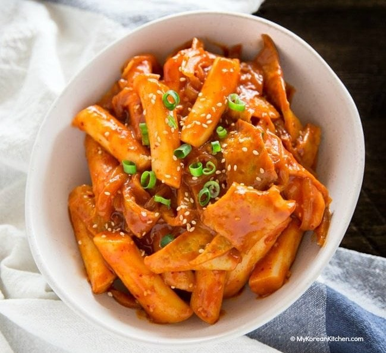
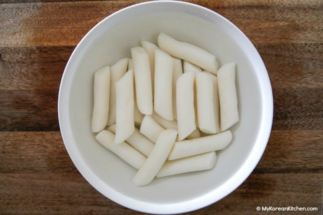
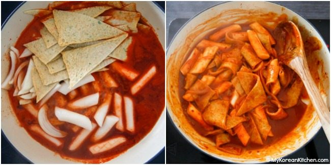
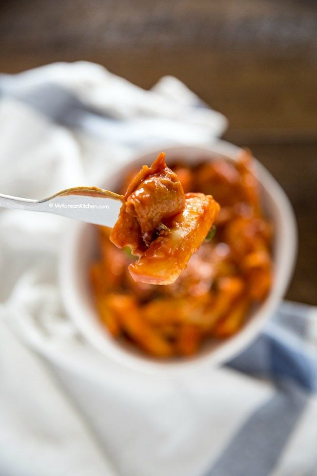

Korean Food
TTEOKBOKKI (SPICY RICE CAKES)
Tteokbokki is one of the most popular Korean street foods in Korea.
Among other things, today’s recipe is made with Korean rice cakes, Korean fish cakes, Korean soup stock / dashi stock and gochujang (Korean chili paste)!
It’s super delicious, umami rich and highly addictive! So much so that even if your tummy is full, you will still have some room for these spicy rice cakes!

INGREDIENTS FOR TTEOKBOKKI (SERVES 2)
MAIN
350g / 12 ounces Korean rice cakes, separated
150g / 5.3 ounces Korean fish cakes, rinsed over hot water & cut into bite size pieces
2 cups Korean soup stock (dried kelp and dried anchovy stock), use this recipe
60g / 2 ounces onion, thinly sliced
TEOKBOKKI SAUCE (MIX THESE IN A BOWL)
3 Tbsp gochujang (Korean chili paste)
1 1/2 Tbsp raw sugar
1 Tbsp soy sauce
1 tsp minced garlic
1 tsp gochugaru (Korean chili flakes)
GARNISH
1 tsp roasted sesame seeds
1 tsp sesame oil
1 stalk green onion, finely chopped
HOW TO MAKE TTEOKBOKKI
- Unless your rice cakes are soft already, soak them in warm water for 10 mins.

- Boil the soup stock in a shallow pot over medium high heat and dissolve the tteokbokki sauce by stirring it with a spatula.
Once the seasoned stock is boiling, add the rice cakes, fish cakes and onion.
Boil them a further 3 to 5 mins until the rice cakes are fully cooked.
Then, to thicken the sauce and to deepen the flavor, simmer it over low heat for a further 2 to 4 mins.

- BAdd the sesame oil, sesame seeds, and green onion then quickly stir. Serve warm.
